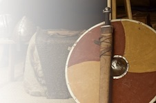
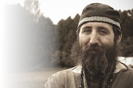
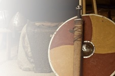
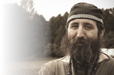

The Royal City of Eoforwic is the greatest city within the ancient Kingdom of Ealdormere. Eoforwic is translated from the Anglo Saxon term for "Wild Boar Settlement". The boundaries of Eoforwic correspond roughly with the modern city of Toronto.
Since time immemorial, the lofty towers of Eoforwic have been the home to mighty warriors, skilled craftsmen, crafty politicians, stunning beauties and cultural refinements. It was here that civilization first appeared in these lands, and from here that it spread.
Who are we really?
The Canton of Eoforwic is a local group within the Society for Creative Anachronism.
Eoforwic is situated in downtown Toronto, with its centre in the University.
The SCA is an international organization dedicated to researching and re-creating the arts and skills of pre-17th-century Europe. Our "Known World" consists of 19 kingdoms, with over 30,000 members residing in countries around the world. Members, dressed in clothing of the Middle Ages and Renaissance, attend events which feature tournaments, royal courts, feasts, dancing, various classes & workshops, and more.
The Kingdom of Ealdormere is the regional division of the SCA covering most of the groups in Ontario, Canada.
Since you are probably wondering, Eoforwic is pronounced, and sometimes written, "Efferwick."
ACtivities iN EoforwiC
The SCA has about 30000 members world-wide, and maybe the same number of non-members who participate in some of our activities. Roughly one hundred of these are in the Eoforwic area.
Among those, you can find somebody who has tried to recreate nearly every aspect of life in the Middle Ages or Renaissance. Some of the activites we do include Fencing, Heavy Weapons Combat, Archery, Armouring, Leatherworking, weaving, knitting, sewing, embroidery, dancing, singing, cooking, baking, brewing, and many other things.
Martial ACtivities
The SCA is most famous for armoured combat with rattan swords, but that is not our only martial activity.
In Eoforwic you will also find people who practice fencing in the SCA style, which is not as formal and static as the style practiced in official fencing competitions.
We have several members who practice archery.
We even have members who have built catapults and other engines for siege warfare.
Youth aged 6-17 can now participate in combat as well. Called Youth Combat or Minor Boffer Combat, padded weapons and appropriate armour are used to give youth a taste of competition, fair play, honour and chivalry in a safe and fun environment. More information about Youth Combat can be found at the Ealdormere Youth Combat website.
Once a year, members of Eoforwic travel to the south to do battle against other kingdoms, as part of an event known as Pennsic War.
Arts & SCieNCes
We have blacksmiths and armourers, silversmiths, and pewter casters. Several of our members do leatherwork.
Members do wool carding, spinning, weaving, knitting, sewing, and embroidery. Some of the costumes they can produce are extraordinary.
We do cooking, baking, and brewing. (Then we practice eating and drinking.)
All the performance arts can be found locally. Eoforwic is a leader in Renaissance dances. We also sing, play instruments, juggle, write and recite poetry, and occasionally perform plays.
Of the quieter arts, we have calligraphy, illumination, and jewellery.
Eoforwic is a bastion of scholarship. Here you may find masters learned in all seven of the liberal arts, sages of philosophy, and experts in methods of reckoning.
Some skills just don't seem like skills, but they do need to be worked at. Have you ever tried to light a fire with flint and steel? We have. It takes practice.
Dance practices are held on most Fridays, at 7:30, at the University of Toronto. These are more intensive than the beginners' dance classes. For more information about the dances we do, see Rosina's web site. The Friday night practices alternate (more or less) between 15th and 16th century Italian dances and later English and French dance styles.
  
 